📷 2026-06-21 한눈에 보기
표·숫자로만 봤던 오늘 작업을 실제 사진으로 — 가로 스크롤하며 보세요
base PG2(LoRA 없음, zero-shot)에 "detect gray basket" 대신 다른 객체 phrase를 줘봤다. 5장 전부 서로 다른 복도/조명이고, hit 5/5(100%) — instruction을 grounding에 연동하는 코드 변경의 전제가 여기서 확인됐다.

"green apple" — area=0.010, cx=0.501
유리문 복도

"blue mug" — area=0.035, cx=0.520
창문 있는 회색타일 복도

"red coke can" — area=0.063, cx=0.500
흰 타일 복도, 30cm 표식

"chair" — area=0.125, cx=0.518
다른 배경

"orange cone" — area=0.056, cx=0.501
유리벽 복도
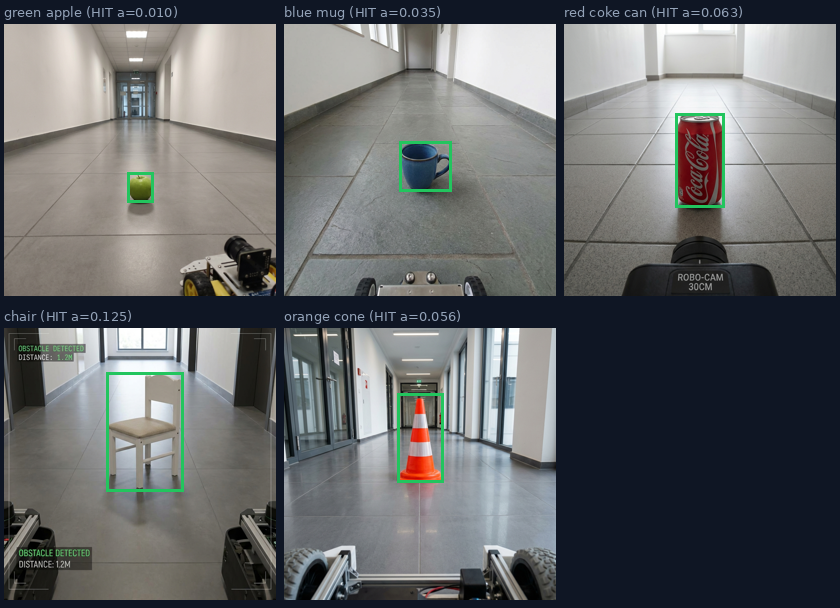
5장 한 번에 — 박스가 전부 타이트하게 객체에 맞음(풀프레임 없음)
PG2를 다른 detector로 바꾸면 더 나을지 같은 8프레임에 세 모델을 나란히 비교했다.

base PG2 — hit 98%, OOD 오탐 9%(의자 11장 중 1장만)

GroundingDINO-tiny — latency 18배 빠르지만 OOD 오탐 100%(의자 11장 전부 오탐)
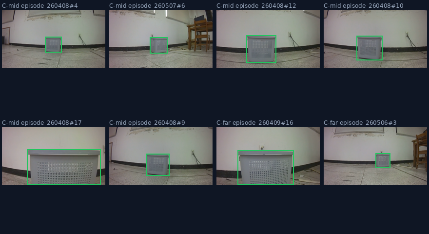
GroundingDINO-base — 더 무거운데도 OOD 오탐 91%, 별로 개선 안 됨
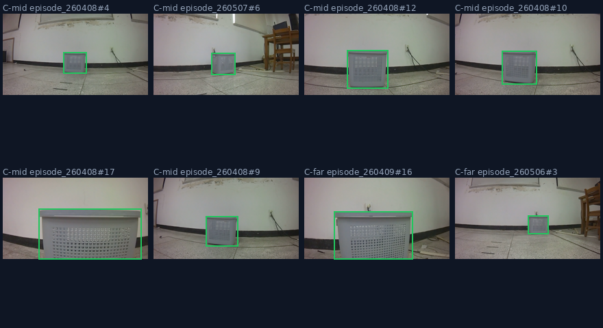
YOLO-World(conf=0.05) — OOD는 양호(18%)하지만 S6/S7 핵심 실패케이스 5건 중 3건 MISS
frame 24에서 학습된 STOP이 한 번 발동하면 105프레임 끝까지 안 풀린다. 그러니까 56/70/85에서 본 grounding 흔들림은 로봇이 이미 정지한 뒤 벌어진 일 — 실제 동작에는 영향이 없었다는 게 오늘 STOP 로직 재생(replay)으로 새로 밝혀진 사실.
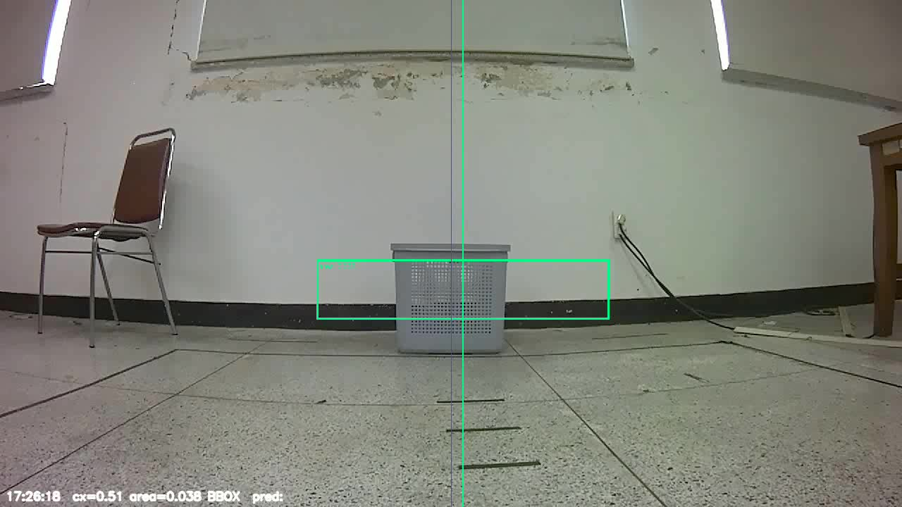
주행 시작 — 아직 STOP 안 됨
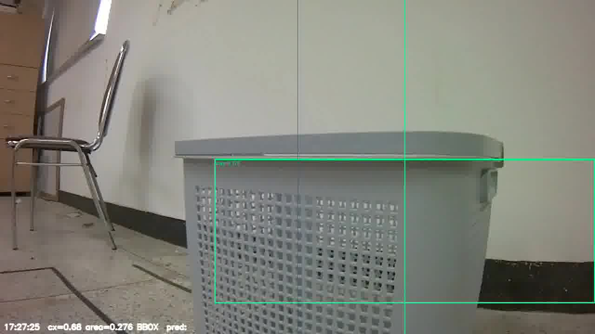
STOP 직전 마지막 프레임 — area 최댓값 0.159(GOAL_AREA 0.25 미달)
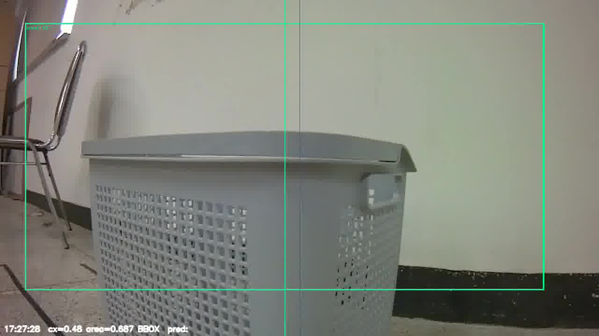
학습된 헤드가 여기서 STOP 예측, 이후 끝까지 0/82 복귀
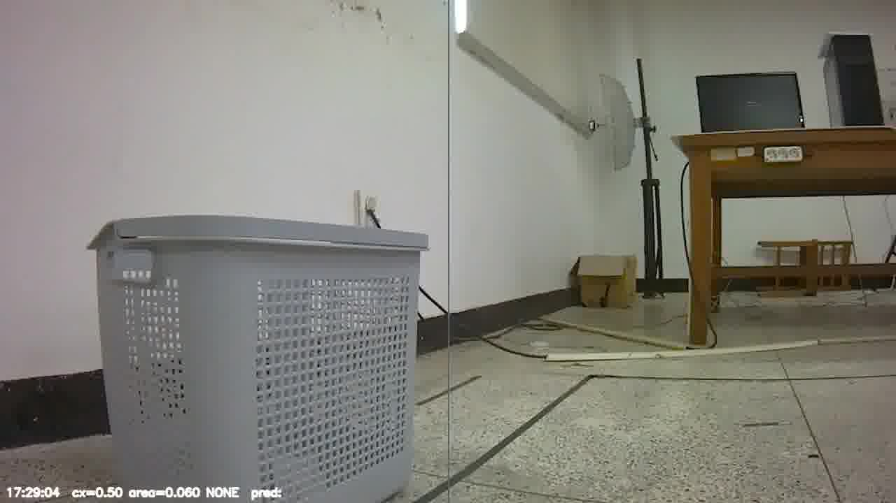
area=0.218 — 이미 멈춰 있어서 무관
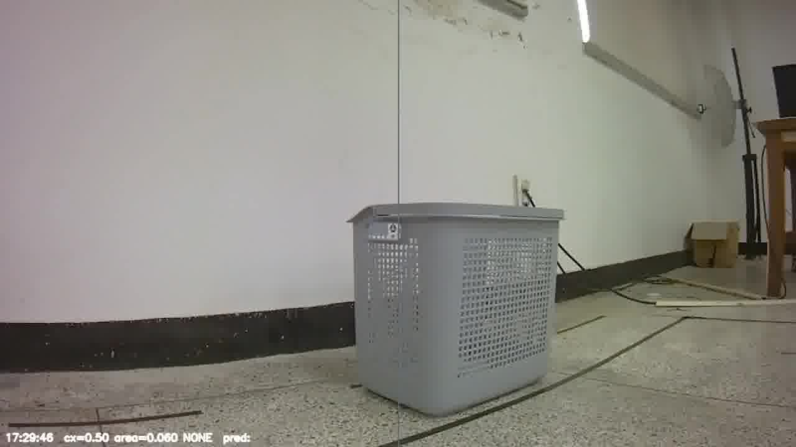
PG2 area=0.250로 부풀림(GDINO는 0.134로 안정) — 그래도 로봇은 이미 정지 상태
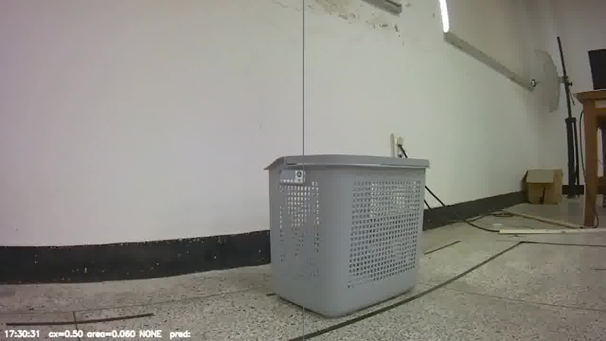
area=0.130 — f70과 거의 동일 장면인데 PG2만 흔들렸었음
frame 53에서 area=0.297로 GOAL_AREA(0.25)를 실제로 넘었다 — bbox 자체는 정상. 문제는 앞뒤 프레임이 못 따라가서 3프레임-연속 조건(GOAL_CONSEC_FRAMES=3)에 걸려 STOP이 끝까지 발동하지 않았다는 것.
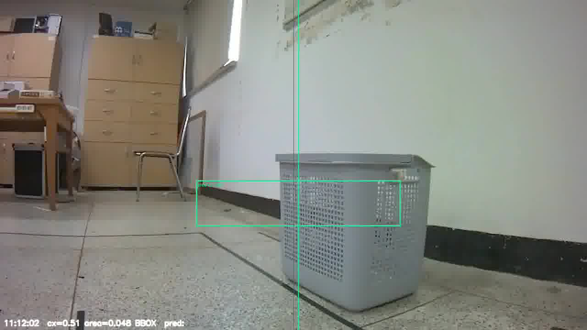
area=0.072 — 아직 멀음
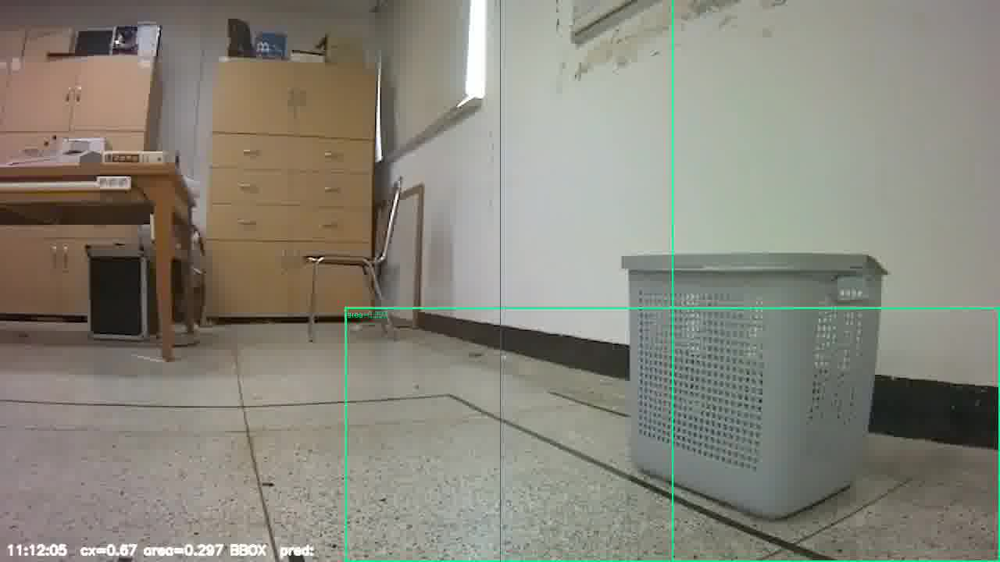
area=0.297(임계 초과!), cx=0.673 — 그런데 단 1프레임
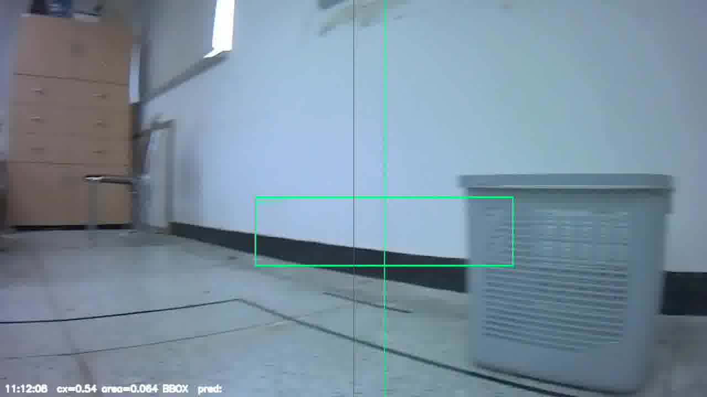
area=0.070 — 바로 다시 멀어짐, 3연속 조건 실패 → STOP 무산
GOAL_CONSEC_FRAMES를 1로 낮추면 S7은 잡지만, 실제 운영 로그(S8, mix-448)의 frame 20처럼 스폿체크로 이미 거짓양성 확인된 프레임에서도 false STOP이 발동한다 — n=2도 n=3과 동일하게 효과 없음.
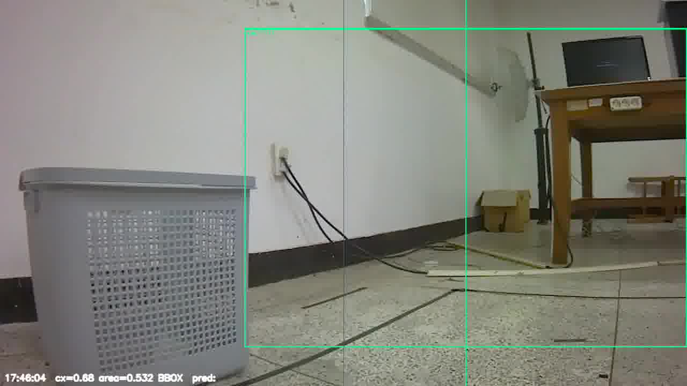
area=0.532(임계 압도적으로 초과)인데 스폿체크로 실제 바스켓이 아님이 확인된 프레임. GOAL_CONSEC_FRAMES=1이면 여기서 false STOP 발동.
38-4에서 hidden state 코사인거리로 "방향 신호가 객체 신호보다 10배 약하다"고 했는데, 숫자만으로는 안 와닿을 수 있다. 그래서 실제 PG2가 무엇을 생성하는지(raw 텍스트 출력)를 4개의 서로 다른 실제 바스켓 세션 사진(S6 baseline·S6 dead-zone·S7 정상검출·S8 production)에서 직접 확인했다.
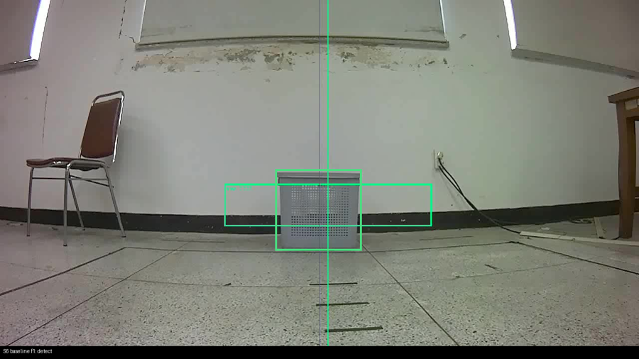
detect → <loc0483><loc0441><loc0714><loc0579>detect+left → 동일 좌표detect+right → 동일 좌표nav_left → 'yes<eos>'nav_right → 'yes<eos>'
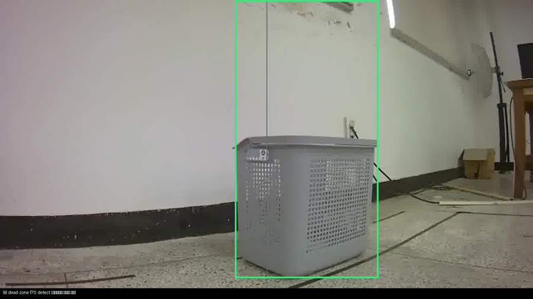
detect → <loc0000><loc0451><loc0951><loc0726>detect+left/right → <loc0460>...(±1픽셀급 차이, 노이즈 수준)nav_left/right → 둘 다 'yes<eos>'
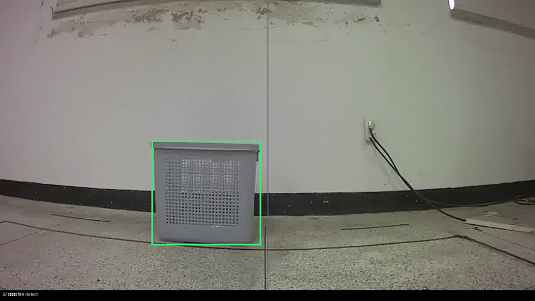
detect → <loc0478><loc0290><loc0833><loc0499>detect+left/right → 동일(±1 노이즈)nav_left/right → 둘 다 'yes<eos>'
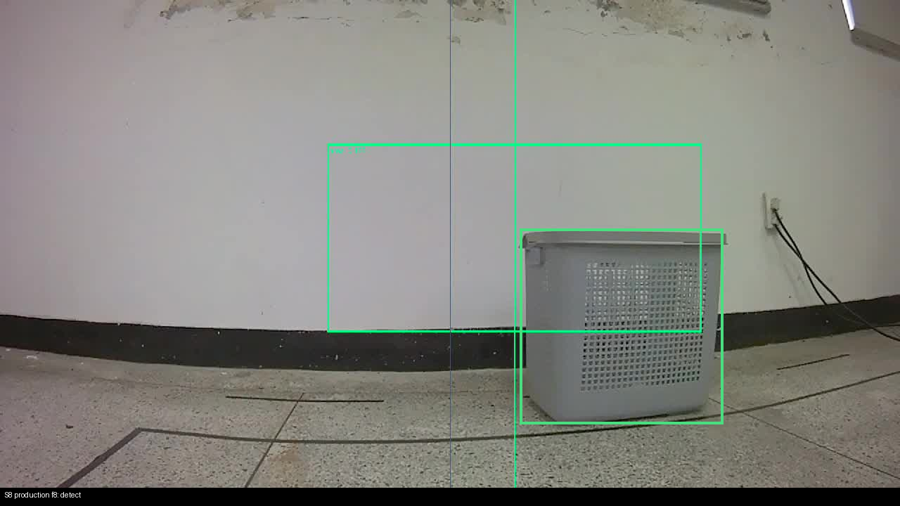
detect → <loc0462><loc0591><loc0857><loc0822>detect+left/right → 동일(±1 노이즈)nav_left/right → 둘 다 'yes<eos>'
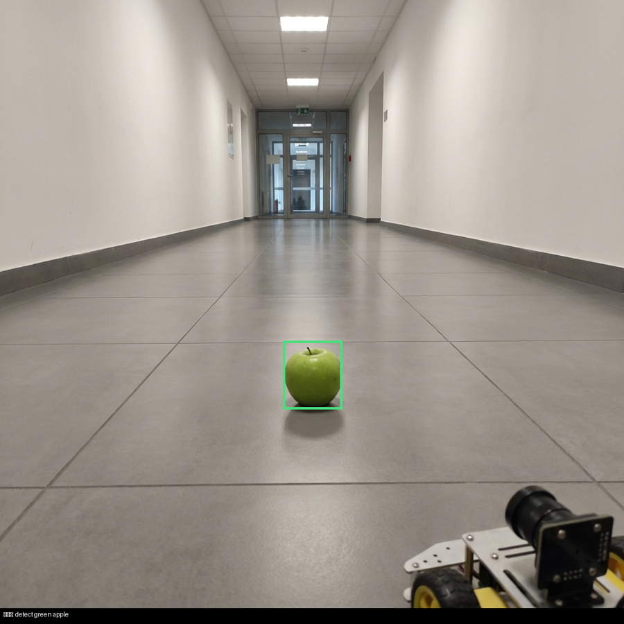
detect green apple → <loc0559><loc0464><loc0671><loc0561> (바스켓과 완전히 다른 좌표)→ 객체가 진짜 바뀌면 출력도 확실히 바뀐다
docs/v5/attention_analysis/pg2_direction_output_test.json · 재현: scripts/measure_hidden_state_pg2.py 확장본docs/plans/plan_20260621_groundingdino_vs_pg2.md, plan_20260621_instruction_grounding.md